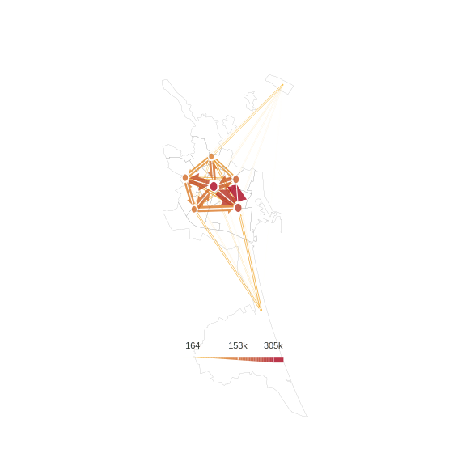

![]()
install.packages(c(
"spanishoddata",
"tidyverse",
"sf",
"flowmapper",
"flowmapblue"
))📈 Tutorial: Flowmaps
1 Setup
Before getting the data, make sure you have {spanishoddata} R package installed and loaded. We will also need {tidyverse} and {sf}.
library(spanishoddata)
library(tidyverse)
library(sf)
library(flowmapper)
library(flowmapblue)The package needs a dedicated location on disk to save the data it downloads. Set it with:
spod_set_data_dir("data")The folder will be created if it does not exist.
Data directory /path/to/your/working/dir/data does not exist. Attempting to create it.
Data directory is writeable.
Data directory successfully set to: /path/to/your/working/dir/dataHere we are just setting the data directory to a subdirectory called data in the current working directory. If you want to use a different directory, change the path to something like spod_set_data_dir("C:/path/to/data") on Windows or spod_set_data_dir("/path/to/data") on Linux/macOS.
Warning
If you do not set the data directory, the package will still work, but it will download the data into a termporary directory of the current R session and you will lose it if you restart the session.
Now you are all set to start accessing the data!
2 Get the data
2.1 Zones
Get the zones with:
zones <- spod_get_zones(zones = "distr", ver = 2)head(zones)Simple feature collection with 6 features and 9 fields
Geometry type: MULTIPOLYGON
Dimension: XY
Bounding box: xmin: 485212.1 ymin: 4705413 xmax: 562700.7 ymax: 4784926
Projected CRS: ETRS89 / UTM zone 30N (N-E)
# A tibble: 6 × 10
id name population census_sections census_districts
<chr> <chr> <dbl> <chr> <chr>
1 01001 Alegría-Dula… 2925 0100101001; 01… 0100101
2 01002 Amurrio 10307 0100201001; 01… 0100201
3 01004_AM Artziniega a… 3005 0100401001; 01… 0100401; 0104201
4 01009_AM Asparrena ag… 4599 0100901001; 01… 0100901; 010130…
5 01010 Ayala/Aiara 2951 0101001001; 01… 0101001
6 01017_AM Campezo/Kanp… 4314 0101601001; 01… 0101601; 010170…
# ℹ 5 more variables: municipalities <chr>,
# municipalities_mitma <chr>, luas_mitma <chr>,
# district_ids_in_v1 <chr>, geom <MULTIPOLYGON [m]>2.2 Flows
You can use the same data as in the previous tutorial:
dates <- c("2024-10-23", "2024-10-30", "2024-11-06", "2024-11-27")flows <- spod_get(
type = "origin-destination",
zones = "districts",
dates = dates
)Alternatively, simply connect to the database, if you converted the data to DuckDB format in the previous tutorial:
flows <- spod_connect("data/clean_data/v2/tabular/duckdb/od_distritos.duckdb")3 Aggregate the data
You need to aggregate the data to get the flows between the zones.
For example, count total flows, or use your own preferred filtering and aggregation combination. Just make sure there are unique origin-destination pairs in the final data frame.
flows_aggregated <- flows |>
group_by(o = id_origin, d = id_destination) |>
summarise(value = sum(n_trips, na.rm = TRUE), .groups = "drop") |>
collect()head(flows_aggregated)# A tibble: 6 × 3
o d value
<fct> <fct> <dbl>
1 0827905 0827903 33611.
2 0827902 0827904 15633.
3 08041 0827904 67.2
4 0807301 0827904 50.3
5 0812503 0827906 470.
6 08161 0827906 136. 4 Prepare the zones
We do not need polygons, but we need the coordinates of the centres of the zones to plot the flows. We can use the sf package to get the centroids of the zones.
zones_coords <- zones |>
st_point_on_surface() |>
st_transform(4326) |>
st_coordinates() |>
as.data.frame() |>
mutate(name = zones$id, real_name = zones$name) |>
rename(x = X, y = Y)
head(zones_coords) x y name real_name
1 -2.539260 42.80483 01001 Alegría-Dulantzi
2 -2.951124 43.04270 01002 Amurrio
3 -3.141543 43.12897 01004_AM Artziniega agregacion de municipios
4 -2.482828 42.88006 01009_AM Asparrena agregacion de municipios
5 -3.078827 43.07678 01010 Ayala/Aiara
6 -2.416802 42.67573 01017_AM Campezo/Kanpezu agregacion de municipios4.1 Focus on Valencia
Focus on Valencia or choose another city of your choice.
zones_filtered <- zones_coords |>
filter(str_detect(real_name, "València"))
head(zones_filtered) x y name real_name
1 -0.3754488 39.47439 4625001 València distrito 01
2 -0.3689019 39.46482 4625002 València distrito 02
3 -0.3857096 39.46848 4625003 València distrito 03
4 -0.4084497 39.48526 4625004 València distrito 04
5 -0.3742480 39.48428 4625005 València distrito 05
6 -0.3601579 39.47474 4625006 València distrito 065 Plot flows with flowmapper
Now we can plot the flows using the flowmapper package. We will use the flowmapper() function to create the flow map.
5.1 Create a base map
base_plot_districts <- zones |>
filter(id %in% zones_filtered$name) |>
st_transform(4326) |>
ggplot() +
geom_sf(fill = NA, col = "grey60", linewidth = 0.1) +
theme_classic(base_size = 20) +
labs(title = "", subtitle = "", fill = "", caption = "") +
theme(
axis.line = element_blank(),
axis.text = element_blank(),
axis.ticks = element_blank(),
axis.title = element_blank(),
panel.background = element_rect(fill = "transparent"),
plot.background = element_rect(fill = "transparent", color = NA),
panel.grid.major = element_blank(),
panel.grid.minor = element_blank()
) +
guides(fill = "none")5.2 Filter the flows
flows_aggregated_filtered <- flows_aggregated |>
filter(o %in% zones_filtered$name & d %in% zones_filtered$name)5.3 Plot the flows
flows_plot_all_districts <- base_plot_districts |>
add_flowmap(
od = flows_aggregated_filtered,
nodes = zones_filtered,
node_radius_factor = 1,
edge_width_factor = 1,
arrow_point_angle = 35,
node_buffer_factor = 1.5,
outline_col = "grey80",
add_legend = "bottom",
legend_col = "gray20",
legend_gradient = TRUE,
k_node = 8 # play around with this parameter to aggregate nodes and flows
)
# customise colours for the fill
flows_plot_all_districts <- flows_plot_all_districts +
scale_fill_gradient(
low = "#FABB29",
high = "#AB061F",
labels = scales::comma_format() # Real value labels
)
flows_plot_all_districts
6 Plot flows with flowmapblue
Flowmapblue requires slighltly different column names in both zones and flows data frames.
flows_aggregated_flowmapblue <- flows_aggregated_filtered |>
mutate(
origin = as.character(o),
dest = as.character(d),
count = value
) |>
select(origin, dest, count)
zones_flowmapblue <- zones_filtered |>
rename(
id = name,
name = real_name,
lon = x,
lat = y
)We are ready to plot the flows with flowmapblue package.
flowmap <- flowmapblue(
locations = zones_flowmapblue,
flows = flows_aggregated_flowmapblue,
mapboxAccessToken = Sys.getenv("MAPBOX_TOKEN"),
darkMode = TRUE,
animation = FALSE,
clustering = TRUE
)
flowmapCitation
BibTeX citation:
@online{kotov2025,
author = {Kotov, Egor},
title = {AGIT 2025 {Workshop:} {Analysing} {Massive} {Open} {Human}
{Mobility} {Data} in {R} {Using} Spanishoddata, Duckdb and Flowmaps},
date = {2025-07-03},
url = {https://www.ekotov.pro/agit-2025-spanishoddata/2-flowmapping.html},
doi = {10.5281/zenodo.15794849},
langid = {en}
}
For attribution, please cite this work as:
Kotov, Egor. 2025. “AGIT 2025 Workshop: Analysing Massive Open
Human Mobility Data in R Using Spanishoddata, Duckdb and
Flowmaps.” July 3, 2025. https://doi.org/10.5281/zenodo.15794849.